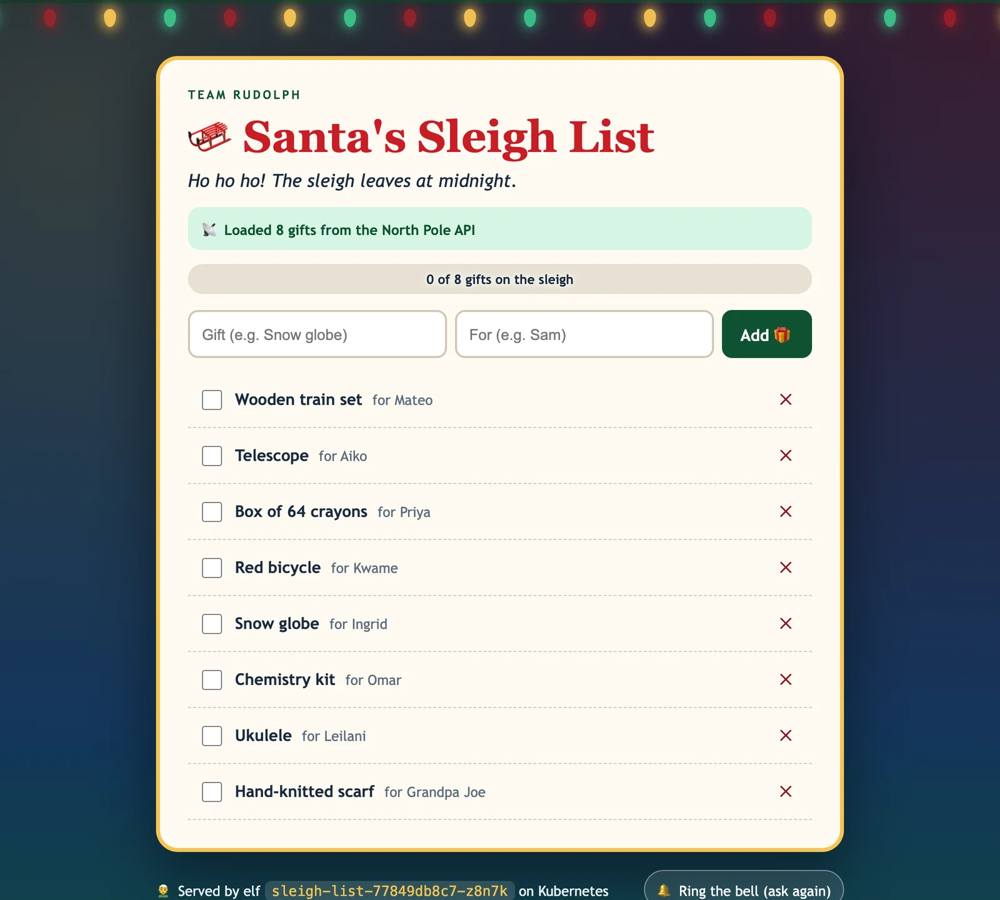
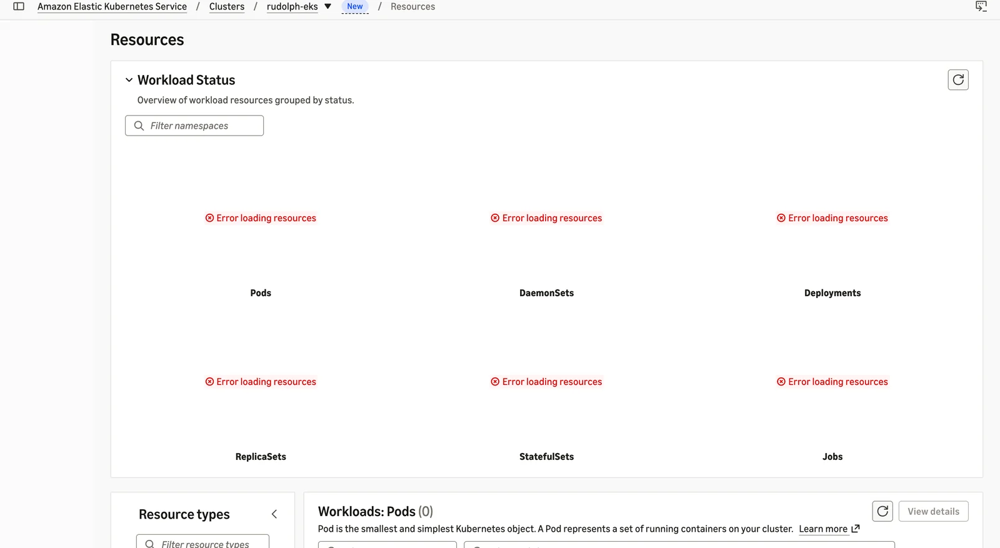

Create a cluster on Amazon EKS, run your image on it by hand, then teach your pipeline to do it.
Kubernetes solves the same problem as ECS with different words. You already know the ideas.
| You want to… | On ECS you made a… | On Kubernetes you make a… |
|---|---|---|
| Describe how to run the container | Task definition | Pod template (inside a Deployment) |
| Keep three copies running | Service | Deployment |
| Give the copies one stable address | Load balancer + target group | Service (yes, the word means something else here) |
| Check a copy is alive | Target group health check | Readiness probe |
| Provide the machines | Fargate, invisible | Nodes: EC2 servers that you can see |
Run every command in this guide from your workshop terminal. kubectl and eksctl are already installed.
Left alone, eksctl builds a new private network for each cluster. Four teams doing that would run into the account's network limits and three teams would be stuck. The command below puts your cluster into the default network that is already there.
# The three default public subnets, as a comma-separated list
SUBNETS=$(aws ec2 describe-subnets \
--filters Name=default-for-az,Values=true Name=availability-zone,Values=us-west-2a,us-west-2b,us-west-2c \
--query 'Subnets[].SubnetId' --output text | tr '\t' ',')
echo $SUBNETS
eksctl create cluster \
--name $TEAM-eks \
--region us-west-2 \
--vpc-public-subnets $SUBNETS \
--nodegroup-name elves \
--node-type t3.medium \
--nodes 2 \
--managedThis takes about 15 minutes. It creates the Kubernetes control plane, then two worker nodes. Leave this terminal alone, open a second terminal, and keep working on something else (your k8s/ files in step 2, for example).
When it finishes it says EKS cluster "[[TEAM]]-eks" in "us-west-2" region is ready. Check:
kubectl get nodesNAME STATUS ROLES AGE VERSION
ip-172-31-26-158.us-west-2.compute.internal Ready <none> 9m v1.34.x-eks-...
ip-172-31-45-65.us-west-2.compute.internal Ready <none> 9m v1.34.x-eks-...What did eksctl do? It wrote two CloudFormation stacks for you, eksctl-[[TEAM]]-eks-cluster and eksctl-[[TEAM]]-eks-nodegroup-elves. If creation fails, the Events tab of those stacks tells you why.
The cluster keeps building in AWS. Check progress in the CloudFormation console. When both stacks are complete, connect kubectl to it with aws eks update-kubeconfig --name $TEAM-eks.
In your repository, create a folder named k8s with two files. Put your real image address in the first one for now (copy it from ECR, including the tag).
apiVersion: apps/v1
kind: Deployment
metadata:
name: sleigh-list
labels:
app: sleigh-list
spec:
replicas: 3
selector:
matchLabels:
app: sleigh-list
template:
metadata:
labels:
app: sleigh-list
spec:
containers:
- name: sleigh-list
image: 123456789012.dkr.ecr.us-west-2.amazonaws.com/[[TEAM]]-sleigh-list:latest
ports:
- containerPort: 3000
readinessProbe:
httpGet:
path: /health
port: 3000
resources:
requests:
cpu: 50m
memory: 64MiapiVersion: v1
kind: Service
metadata:
name: sleigh-list
spec:
type: LoadBalancer # asks AWS for a load balancer in front of the pods
selector:
app: sleigh-list
ports:
- port: 80
targetPort: 3000By labels. The Deployment stamps every pod with app: sleigh-list. The Service's selector says "send traffic to anything wearing that label". Nothing else connects them. If the two do not match exactly, the Service has no pods behind it, and you get a load balancer that answers nothing.
kubectl apply -f k8s/
kubectl get pods
kubectl get service sleigh-listWait until three pods say Running with 1/1 ready. The service shows a long address under EXTERNAL-IP. Give it a minute or two, then open it with http:// in front.

Nodes do not need extra rights to pull your image. The node role that eksctl created can already read from ECR in the same account.
| Command | When to use it |
|---|---|
kubectl get pods -o wide | What is running, and on which node? |
kubectl describe pod NAME | A pod will not start. Read the Events at the bottom. |
kubectl logs NAME | What did the container print? |
kubectl delete pod NAME | Lose an elf on purpose and watch the Deployment replace it. |
Open your cluster in the EKS console and look at the Resources tab.

EKS has two layers of permission. IAM decides who may talk to the cluster. Kubernetes itself decides what they may do inside it. The cluster was created by your workshop's role, so that role is its administrator. Your personal console user has never been introduced.
Introduce yourself with an access entry. Each teammate who wants to use the console runs this from the workshop, with their own IAM user name:
ACCOUNT=$(aws sts get-caller-identity --query Account --output text)
ME=arn:aws:iam::$ACCOUNT:user/YOUR-IAM-USER-NAME
aws eks create-access-entry --cluster-name $TEAM-eks --principal-arn $ME
aws eks associate-access-policy --cluster-name $TEAM-eks --principal-arn $ME \
--policy-arn arn:aws:eks::aws:cluster-access-policy/AmazonEKSClusterAdminPolicy \
--access-scope type=clusterReload the console page. Your pods appear. This idea comes back in step 6.
The build already makes the image. It needs three more things: to know the cluster's name, to be allowed in, and the commands to run.
Every build creates a new image tag, so the image line in deployment.yaml cannot be a fixed value. Replace it with a placeholder that the build will fill in:
image: IMAGE_PLACEHOLDER # the pipeline swaps in the real image addressThen add this to the end of post_build in your buildspec.yml, after the line that writes imagedefinitions.json:
# Second destination: Kubernetes (only when EKS_CLUSTER_NAME is set)
- |
if [ -n "$EKS_CLUSTER_NAME" ]; then
aws eks update-kubeconfig --name "$EKS_CLUSTER_NAME"
sed "s|IMAGE_PLACEHOLDER|$REPO_URI:$IMAGE_TAG|" k8s/deployment.yaml | kubectl apply -f -
kubectl apply -f k8s/service.yaml
kubectl rollout status deployment/sleigh-list --timeout=180s
fi| Line | What it does |
|---|---|
update-kubeconfig | Writes the connection details for your cluster on the build machine. |
sed … | kubectl apply -f - | Swaps the placeholder for the image just built, and sends the result to the cluster. |
rollout status | Waits for the new pods to be ready. If they never are, the build fails, and you find out. |
Add the cluster name to the build project: CodeBuild → your project → Edit → Environment → Additional configuration → Environment variables, and add EKS_CLUSTER_NAME = [[TEAM]]-eks.
If you pushed now, the build would fail. It is the same story as the console in step 4, with one extra lock.
In IAM, open [[TEAM]]-codebuild-role, choose Add permissions → Create inline policy, and use this JSON. Name it describe-eks.
{
"Version": "2012-10-17",
"Statement": [
{
"Effect": "Allow",
"Action": "eks:DescribeCluster",
"Resource": "*"
}
]
}ACCOUNT=$(aws sts get-caller-identity --query Account --output text)
BUILD_ROLE=arn:aws:iam::$ACCOUNT:role/$TEAM-codebuild-role
aws eks create-access-entry --cluster-name $TEAM-eks --principal-arn $BUILD_ROLE
aws eks associate-access-policy --cluster-name $TEAM-eks --principal-arn $BUILD_ROLE \
--policy-arn arn:aws:eks::aws:cluster-access-policy/AmazonEKSClusterAdminPolicy \
--access-scope type=clusterIf the console created your role inside a path (for example service-role/), copy the role's full ARN from the IAM console instead of building it by hand.
Cluster admin is more than a deploy job needs. Kubernetes lets you scope access to one namespace: look at AmazonEKSEditPolicy with --access-scope type=namespace,namespaces=default. A good detail for your presentation.
deployment.yaml and buildspec.yml.deployment "sleigh-list" successfully rolled out.One push, two orchestrators. You can now say from experience how they differ.
| The build log says | It means |
|---|---|
AccessDeniedException … eks:DescribeCluster | Lock 1 is missing. |
You must be logged in to the server or Unauthorized | Lock 2 is missing, or was made for a different role ARN. |
ImagePullBackOff (seen with kubectl get pods) | The placeholder was not replaced, or the image address has a typo. |
error: timed out waiting for the condition | The new pods never became ready. Run kubectl describe pod and read the Events. |
A cluster costs money every hour. When the mission is over, delete things in this order. The order matters: the load balancer was created by Kubernetes, so Kubernetes has to remove it.
kubectl delete service sleigh-list
kubectl delete deployment sleigh-list
eksctl delete cluster --name $TEAM-eks --region us-west-2Deletion takes about ten minutes.